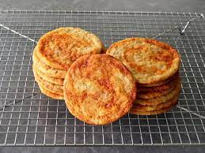

Gochujang Caramel Cookies

Description
These gochujang caramel cookies, adapted from a sugar cookie marbled with Korean chili paste and invented by cookie genius Eric Kim of the New York Times, are spicy-sweet, savory, and have the perfect chewy texture. They're my new favorite cookie.
Ingredients
- 8 tablespoons unsalted butter, softened, divided
- 2 tablespoons light brown sugar
- 1 rounded tablespoon gochujang (Korean chili paste)
- 1 cup white sugar
- 3/4 teaspoon kosher salt
- 1/2 teaspoon baking soda
- 1/4 teaspoon ground cinnamon
- 1 teaspoon vanilla extract
- 1 large egg, at room temperature
- 1 1/2 cups (180 g) all-purpose flour
Steps
- Mix 1 tablespoon butter with brown sugar and gochujang in a small bowl to form a paste; set aside.
- Add white sugar, salt, baking soda, cinnamon, vanilla extract, egg, and remaining 7 tablespoons butter into a bowl. Use an electric hand mixer, whisk, or a spatula to mix everything until light and fluffy. Add flour; use a spatula to mix until the flour disappears.
- Flatten mixture in the bowl with the flat side of the spatula, then slightly roughen the surface with the edge of the spatula to make some shallow cracks and crevices.
- Use a teaspoon to apply small dollops of gochujang mixture over the top, then use the spatula to fold cookie dough up over the gochujang mixture, gently stirring and folding, to create well-defined streaks of chili paste marbled throughout the dough.
- Refrigerate dough for about 20 minutes.
- Preheat the oven to 350 degrees F (175 degrees C). Line 2 baking sheets with parchment.
- Scoop cookie dough by 2 tablespoonfuls; arrange 8 cookies per pan on the prepared baking sheet, leaving plenty of room between cookies; dough will spread out.
- Bake in the preheated oven until the edges are very lightly golden, 13 to 15 minutes. Cool on the pan for 5 minutes before transferring to a wire rack to cool completely.